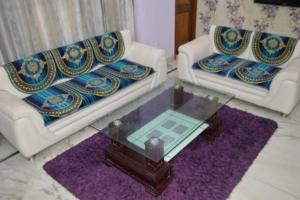

Et design utformet etter en logisk ideologi.
Det mest fornuftige designet.
Et design som tjener mennesket.
Et design er ment for å gi oss glede. Det er ment til å få oss komfortable.
Et design er ment til å være er noe som antas å være slik. Det er ment til å se slik ut fordi det var den eneste måten et design var i stand til å tjene formålet ved å bli opprettet.
Et design er ment til å ha evnen til å være noe meningsfylt, å være feilfri.
Kreasjoner, kreative løsninger, troverdighet, skapelse av skjønnhet, men også av nytteverdi.
Å skape noe ut i fra en ide.
Tenk å være rask, villig til å bli assosiert med det neste merke, det neste designet, bare det å være det.
Vær den første ved å designe et design ment til å være.
